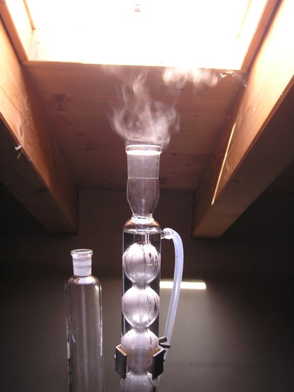
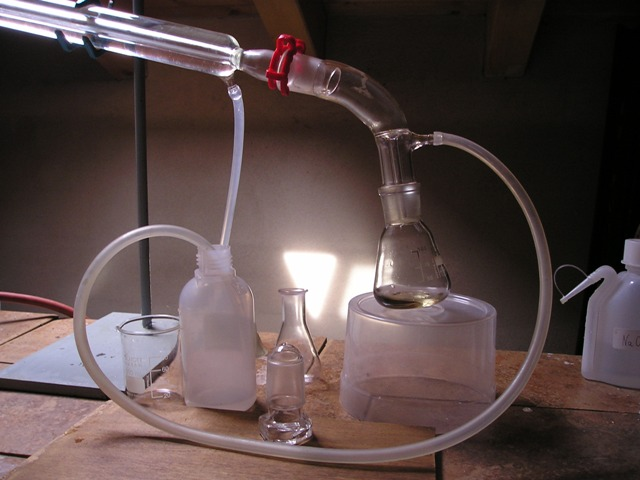
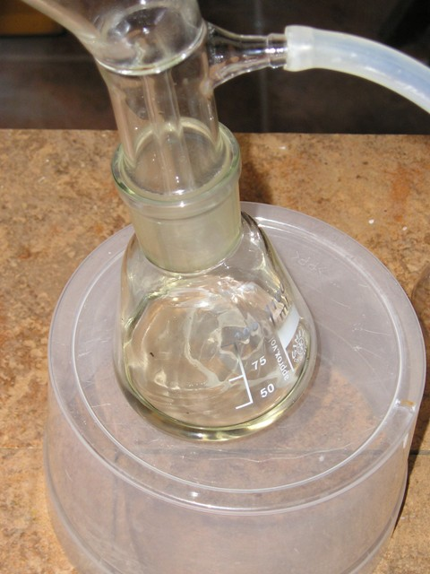

Premessa minima: qualcuno che capitasse qui per caso e che si azzardasse a leggere queste righe (c'è sempre qualche eroe...) potrebbe non sapere che in chimica organica un acido è caratterizzato per avere in qualche parte della molecola il gruppo carbossile -COOH. Se questo gruppo viene modificato in -CO-X (dove X può essere il cloro, il bromo o lo iodio) si originano gli alogenuri degli acidi, cioè il cloruro, il bromuro o lo ioduro dell'acido originario (dall'acido acetico CH3-COOH deriva il cloruro di acetile CH3-CO-Cl, e così via). Gli alogenuri degli acidi sono sostanze estremamente reattive ed altrettanto utili in chimica organica in svariate reazioni di sintesi.
Ho sintetizzato in questa occasione il cloruro di butirrile essenzialmente per due motivi: quello ludico (il principale!) e quello utilitaristico, in previsione di servirmi di questo buon alogenuro per la sintesi di butirrati alchilici, che sono esteri di interessante odore fruttato.
Cosa sono gli esteri? Alla prossima puntata...
Per la sintesi di oggi serve:
- il puzzolentissimo Acido n-Butirrico CH3-(CH2)-COOH
- l'irritantissimo Cloruro di tionile SOCl2
- un apparato di distillazione, con refrigeranti Liebig e Allhin
- un imbuto gocciolatore
- vetreria varia
Procedimento:

In un pallone a due colli da 250 ml perfettamente asciutto si intoducono 83 g (50 ml) di cloruro di tionile, si applica un buon refrigerante a ricadere (almeno 6 bolle) e al collo laterale del pallone un imbuto gocciolatore contenente 48 g (50 ml) di acido n-butirrico. Si scalda moderatamente l'SOCl2 e si fa gocciolare lentamente l'acido nel pallone, goccia a goccia, sotto leggera agitazione.
La discesa dell'acido deve durare circa un'ora, regolando la temperatura (50-60°) in modo che la reazione di alogenazione proceda speditamente senza divenire tumultuosa.

In questa fase si ha abbondante emissione di gas fortemente irritanti e fumanti all'aria dalla sommità dell'Allhin (HCl + SO2), quindi agire sotto cappa o quasi all'aperto come ho fatto io, ma sempre con attenzione!Quando tutto l'acido butirrico è sceso nel pallone, continuare il riscaldamento a riflusso per un'altra mezz'ora, notando la progressiva diminuzione di gas in uscita dal refrigerante. A questo punto lasciar raffreddare un poco e sostituire velocemente l'Allhin con un Liebig, collegando ermeticamente il sifone di raccolta ad una beuta da 100 ml normalizzata.
Se tutto il setup è fatto bene (velo di silicone nei giunti, anelli di tenuta, ecc.) non si ha la minima emissione di gas irritanti nell'ambiente durante la fase di distillazione.

Distillare ora il prodotto, raccogliendo tutto ciò che passa dai 75 ai 110 gradi (la maggior parte è intorno ai 100°; prima arriva il leggero eccesso di tionilcloruro usato all'inizio). Riaggiangiare ora il sistema per la successiva ridistillazione, raccogliendo questa volta tra i 98 e i 102 gradi, e fortunatamente quasi tutto passa intorno a questa temperatura, senza difficoltà.
Si ottiene un liquido limpido incoloro, di densità 1,05, mobilissimo, fumante all'aria, con odore fortemente irritante come tutti gli alogenuri acilici. Resa 48 g (48 ml), circa 82% di cloruro di n-butirrile, una buona resa per un ambiente di lavoro home-lab!

Reazioni
CH3-(CH2)2-COOH + SOCl2 --> CH3-(CH2)2-CO-Cl + SO2 + HCl
Questa sintesi coinvolge reagenti abbastanza aggressivi, come il cloruro di tionile, ma se si conduce con la dovuta attenzione non crea problemi e fornisce un prodotto molto utile per il lab. Esso va conservato in bottiglia scura ed ermeticamente chiusa, perchè è sensibilissimo all'umidità, che lo decompone istantaneamente in acido butirrico e acido cloridrico (per questo motivo fuma all'aria!).
Le immagini mostrano le varie fasi della sintesi di alogenazione; gli abbondanti vapori acidi vengono risucchiati dalla "cappa naturale" (grande apertura verso il tetto immediatamente sopra l'Allhin, con tiraggio naturale di corrente d'aria dal basso verso l'alto).
Le altre foto riguardano la fase di distillazione e il particolare dello sfiato per la neutralizzazione di eventuali residui gassosi acidi.
La prossima volta parlerò di una sintesi ottenuta usando proprio il cloruro di butirrile qui prodotto.